Transformers
In this chapter, we'll explore how machines translate "Ein Mann steht in einer Küche" (German) to "A man is standing in a kitchen" (English) using the revolutionary Transformer architecture—focusing purely on the mathematical elegance behind it.
The Big Picture
Here's how a Transformer might look at a very high level for our task.
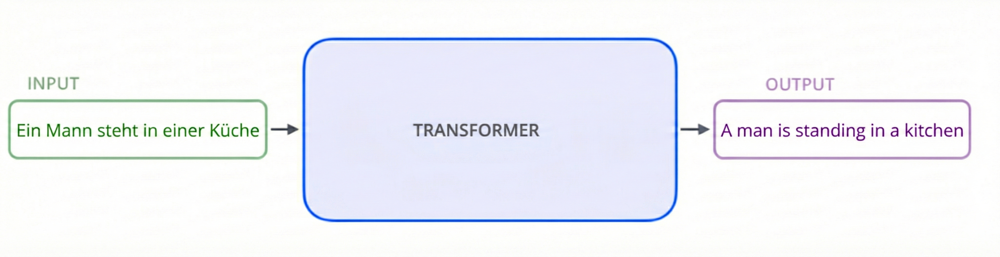
You can think of this as a black box that takes German text and outputs English text.
Now let's try to open up this black box!!!!

This looks scary!!! But do not worry, we'll learn this architecture (in 2 parts: encoder and decoder) thoroughly and understand how did our text get translated step by step.
The Encoder: Building Context
The encoder's job is to build a rich, context-aware representation of the input sentence (German).
Each encoder layer has these sub-components:
- Multi-Head Self-Attention
- Feed-Forward Network
- Residual Connections
- Layer Normalization
- Dropout
This is how the Encoder Architecture looks like in the paper:
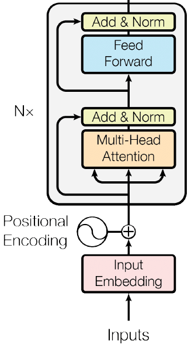
Let's break this down step by step.
Embeddings: From Words to Vectors
Our Model can't work with words directly—they need numbers. But a simple index like "423" doesn't capture meaning. We need representations that encode semantic relationships.
One way to deal with this is given in the paper "Efficient Estimation of Word Representations in Vector Space", where the author introduced the concept of word embeddings.
You can think of embeddings as a way to represent words in a continuous vector space, where the position of each word encodes its meaning.
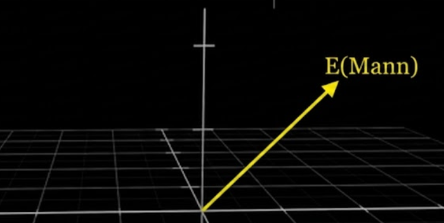
The Mathematical Transformation
Each token (word) gets mapped to a high-dimensional vector space:
\[ \text{Embedding}: \mathbb{Z} \rightarrow \mathbb{R}^{d_{model}} \] \[ \text{where } d_{model} = 512 \]We now convert our input words (tokens) into these high-dimensional vectors.
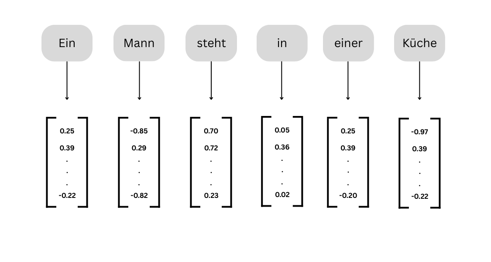
Positional Encoding: Teaching Order
Unlike RNNs that process words sequentially, Transformers process all tokens simultaneously. This creates a problem: the model has no inherent sense of word order!
Consider these two sentences:
- "Ein Mann steht in einer Küche" - The man is standing in kitchen
- "Ein Küche steht in einer Mann" - The kitchen is standing in man
Without positional information, the model can't distinguish between them!
The Sinusoidal Solution
We add position-dependent patterns using sine and cosine functions. For position \(pos\) and dimension \(i\):
\[ PE_{(pos, 2i)} = \sin\left(\frac{pos}{10000^{2i/d_{model}}}\right) \] \[ PE_{(pos, 2i+1)} = \cos\left(\frac{pos}{10000^{2i/d_{model}}}\right) \]Where:
- \(pos\): Position in the sequence (0, 1, 2, ...)
- \(i\): Dimension index (0 to \(d_{model}/2\))
- \(d_{model}\): Model dimension (512)
Why Sinusoidal Works
Each position gets a unique combination of sine and cosine values across all dimensions. No two positions have the same encoding.
\[ PE_{pos_1} \neq PE_{pos_2} \quad \forall pos_1 \neq pos_2 \]Nearby positions have similar encodings. The similarity decreases gradually with distance:
\[ \text{similarity}(PE_{pos}, PE_{pos+1}) > \text{similarity}(PE_{pos}, PE_{pos+5}) \]The model can learn to attend to relative positions. For any fixed offset \(k\), the function \(PE_{pos+k}\) can be represented as a linear function of \(PE_{pos}\):
\[ PE_{pos+k} = f_k(PE_{pos}) \]This allows the model to learn patterns like "attend to the word 3 positions before"
Different dimensions oscillate at different frequencies:
- Lower dimensions: Oscillate slowly (wavelength ≈ 2π to 10000·2π)
- Higher dimensions: Oscillate quickly
This creates a spectrum from coarse to fine-grained positional information.
The complete input to the encoder/decoder is:
\[ \mathbf{x}_{input} = \text{Embedding}(\mathbf{x}) \cdot \sqrt{d_{model}} + PE(\mathbf{x}) \]The multiplication by \(\sqrt{d_{model}}\) ensures embeddings dominate over positional encodings (since embeddings are learned and more important).
Attention Mechanism: The Heart of Transformers
We'll begin by describing a single head of attention. Think of it as asking: "Which other tokens should I pay attention to when processing this token?"
Suppose the only type of update that we care about (for now), is looking at how tokens such as steht and kuche is affecting the embedding of Mann
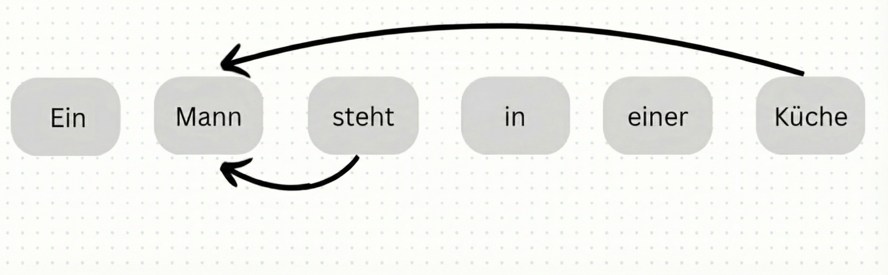
Our goal is to ingest the meaning of the surrounding words (steht and kuche) to update the embedding of Mann.
Queries
For the first step in this attention block, we can imagine each content word asking a question:
Which words describe where I'm and what I'm doing?
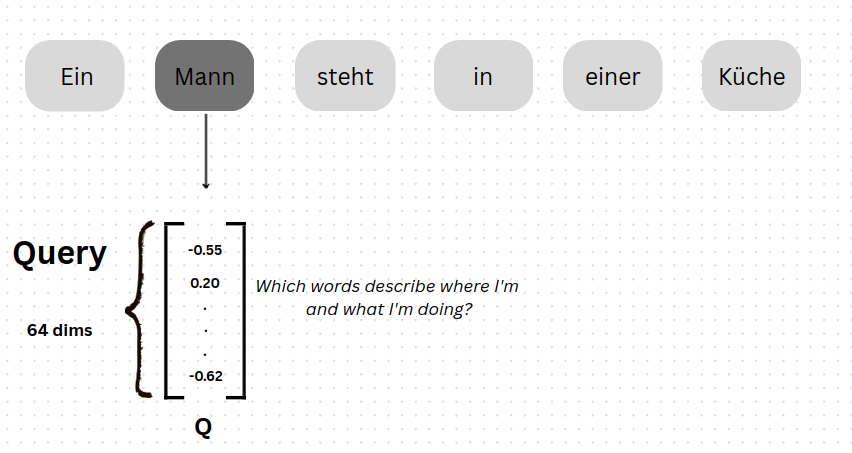
These questions can be encoded as vectors in the query space. To do the same, we apply a linear transformation to the embeddings using a query matrix \(W_Q\) .
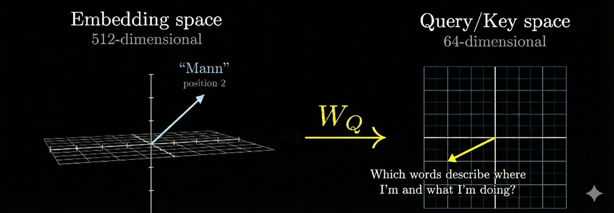
We then find the query vectors for all the tokens in the context window
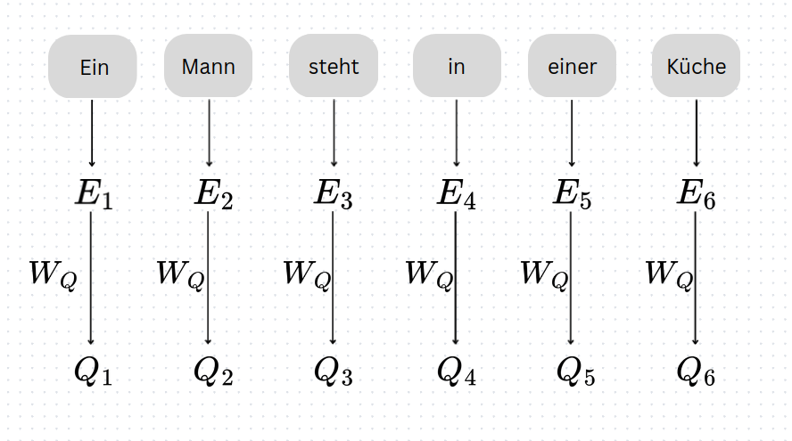
Keys
Simultaneously, we create a key matrix \(W_K\) is multiplied by each of the embeddings.
Conceptually, we want to think these keys as representing the potential answers to the queries.
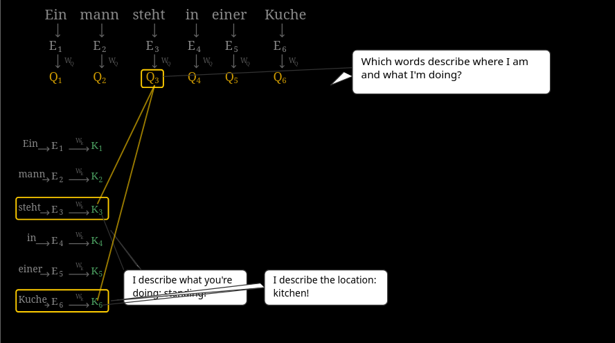
The way we measure how close a query is to a key is by computing their dot product. This gives us a score indicating how much attention the query should pay to the key.
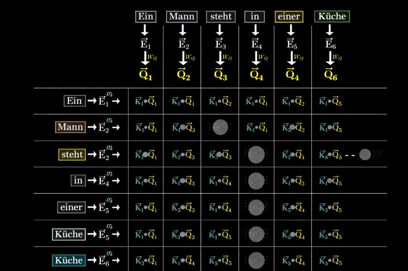
We then compute the softmax along the columns of this matrix to compute the attention weights (probability scores).
\[softmax\left(\frac{QK^T}{\sqrt{d_k}}\right)\]where, softmax is \(\frac{e^{x_i}}{\sum_{j} e^{x_j}}\) and is computed along the column
Values
Once we've defined the softmax scores, our aim now is to actually update the embeddings.
Since our query/key subspace is of a lower dimension, we want to linearly transform it to higher dimension equivalent to the embedding space.
To do this, we'll use a Value Matrix \(W_V\).
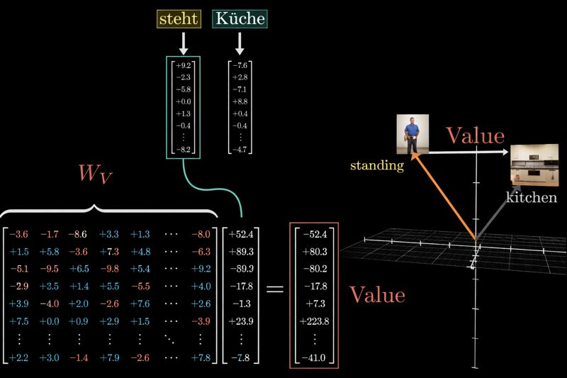
The result yields a value vector for each token. We'll use this to add to our embeddings.
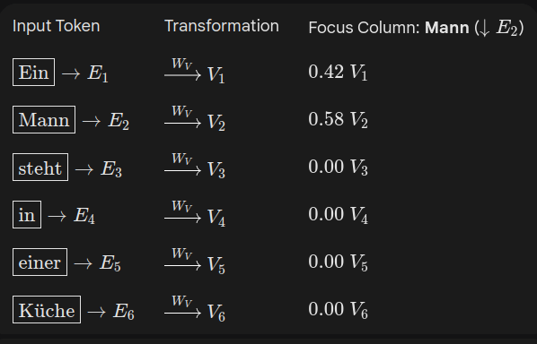
We then compute the weighted sum of the value vectors using the attention weights to get the final output.
\[ \mathbf{E}'_{\text{Mann}} = \sum_{i} \alpha_{\text{Mann}, i}\,\mathbf{V}_i + \mathbf{E}_{\text{Mann}} \]Finally, the overall step can be summarized by:
\[\text{Attention}(Q, K, V) = \text{softmax}\left(\frac{QK^T}{\sqrt{d_k}}\right)V\]Multi-Head Attention: Multiple Perspectives
All we've learnt so far is all contained in a single head of attention. Now, we'll extend this idea to multiple heads to capture different types of relationships simultaneously.
For example, when processing the word "Mann", we might want to attend to:
- Head 1: Syntactic relationships (subject-verb-object)
- Head 2: Semantic similarities (noun groups, verb groups)
- Head 3: Local context (adjacent words)
- Head 4: Long-range dependencies (first/last words)
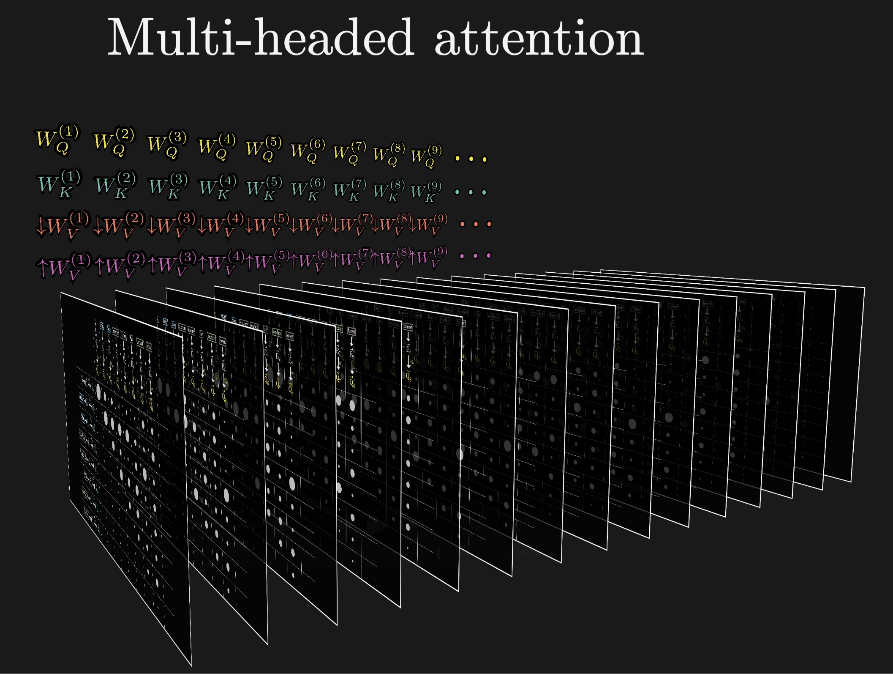
A more detailed explanation of multi-head attention looks like this:
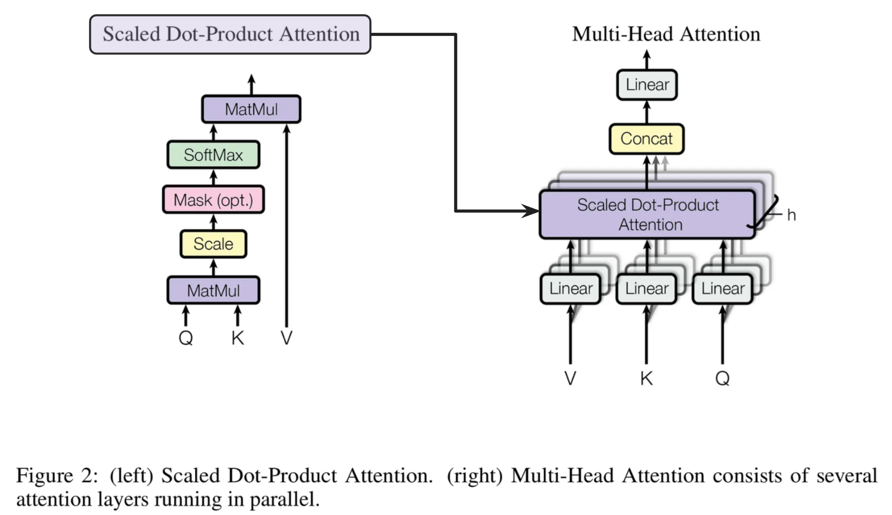
Construction of Multi-Head Attention
Let’s formalize this:
- Model Dimension: \(d_{model} = 512 \)
- Number of heads: \(h = 8\)
Each head operates in a lower-dimensional subspace:
\[d_k = d_v = \frac{d_{model}}{h} = \frac{512}{8} = 64\]Instead of one set of matrices \(W_Q, W_K, W_V\), we now have one set per head:
\[ W^{(i)}_Q, W^{(i)}_K, W^{(i)}_V \text{ for } i=1…h \]For head \(i\):
\[ Q^{(i)} = XW^{(i)}_Q, \quad K^{(i)} = XW^{(i)}_K, \quad V^{(i)} = XW^{(i)}_V \]where \(Q^{(i)}, K^{(i)}, V^{(i)} \in \mathbb{R}^{n \times d_k}\)
Each head sees the same input embeddings \(X\), but projects them into different subspaces.
Each head independently computes attention:
\[ \text{head}_i = \text{softmax}\left(\frac{Q^{(i)} K^{(i)T}}{\sqrt{d_k}}\right) V^{(i)} \]So we now have \(h\) different outputs, one per head.
We stack the outputs of all heads:
\[ \text{Concat}(\text{head}_1, \ldots, \text{head}_8) \in \mathbb{R}^{n \times (8 \times 64)} = \mathbb{R}^{n \times d_{model}} \]Apply output transformation:
\[ \text{Output} = \text{Concat}(\text{heads}) \cdot W_{O} \in \mathbb{R}^{n \times d_{model}} \]Now you might ask why yet another linear projection?
Since the concatenated outputs don't really communicate to each other, by allowing another linear projection, we enable the model to combine information from all heads in a learned way.
Feed Forward Networks: Position-wise Transformations
After the multi-head attention mechanism has allowed tokens to gather information from each other, each token's representation is passed through a Feed Forward Network (FFN). This might seem anticlimactic after the complexity of attention, but it plays a crucial role!
The Architecture
The FFN is surprisingly simple—it's a two-layer fully connected network applied identically and independently to each position:
\[ \text{FFN}(x) = \max(0, xW_1 + b_1)W_2 + b_2 \]Where:
- \(W_1 \in \mathbb{R}^{d_{model} \times d_{ff}}\): First layer weights (512 × 2048)
- \(W_2 \in \mathbb{R}^{d_{ff} \times d_{model}}\): Second layer weights (2048 × 512)
- \(b_1, b_2\): Bias vectors
- \(d_{ff} = 2048\): Inner dimension (4× the model dimension!)
- \(\max(0, \cdot)\): ReLU activation function
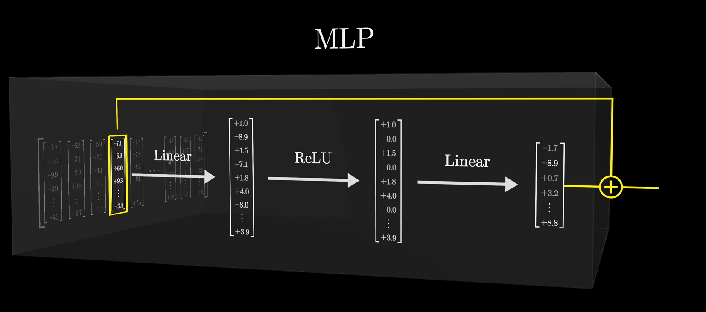
Before understanding the full architecture, let's ask why do we require it in first place???
Attention alone isn't enough: Attention is a mechanism which communicates information across tokens. It is still fundamentally a linear operation.
By utilizing a Feed Forward Network (FFN) to each token embeddings (independently), we can apply non-linear transformations (helps in capturing complex patterns) to each token's representation.
\[ \text{FFN}(x_1), \text{FFN}(x_2), \ldots, \text{FFN}(x_n) \]Each token goes through their same FFN, but with no interaction between tokens.
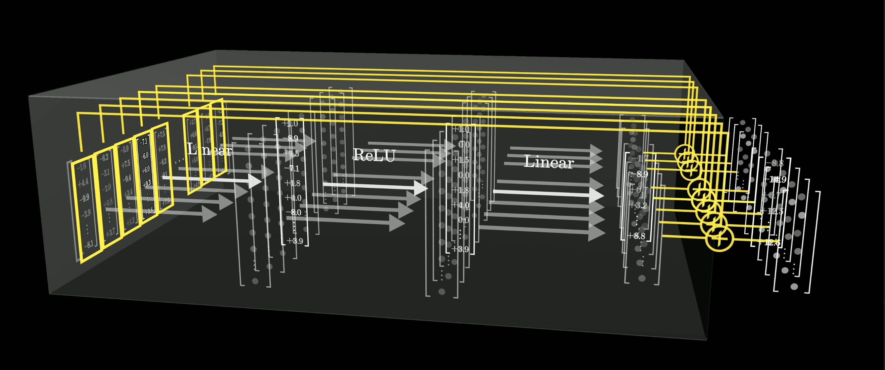
Let's now understand the working and what each component does here:
The first step is to convert our resultant outputs from the Multi-Headed Attention (MHA) block to a higher dimension.
The main motive behind this is to learn more features by projecting the resultant vector onto a higher dimensional space.
Mathematically, this is equivalent to:
\[ E''_{\text{Mann}} = E'_{\text{Mann}} \cdot W_1 + b_1 \]where, \(E'_{\text{Mann}} \in \mathbb{R}^{512}\), \(W_1 \in \mathbb{R}^{512 \times 2048}\), and \(b_1 \in \mathbb{R}^{2048}\)
Our new vector \(E''_{\text{Mann}} \in \mathbb{R}^{2048}\) is now in a higher dimensional space.
Now, we perform a ReLU activation:
\[ E'''_{\text{Mann}} = \max(0, E''_{\text{Mann}}) \]What ReLU does here is, if a neuron's input is negative, it sets the output to zero; otherwise, it passes the input through unchanged.
This is where the non-linearity stuff occurs.

Our new vector \(E'''_{\text{Mann}} \in \mathbb{R}^{2048}\) retains the same shape as it did previously.
Finally, we project the vector back to the original dimension:
\[ E''''_{\text{Mann}} = E'''_{\text{Mann}} \cdot W_2 + b_2 \]where, \(E'''_{\text{Mann}} \in \mathbb{R}^{2048}\), \(W_2 \in \mathbb{R}^{2048 \times 512}\), and \(b_2 \in \mathbb{R}^{512}\)
Our final vector \(E''''_{\text{Mann}} \in \mathbb{R}^{512}\) is now back in the original dimension.
We can write the overall transformation as:
\[ FFN(x) = \max(0, xW_1 + b_1)W_2 + b_2 \]At this point in the Transformer, each token has:
- Gathered context via multi-head attention
- Processed that context via the FFN
But we're not done yet! These operations are wrapped in something called residual connections and layer normalization—our next topics.
The FFN/MLPs are the components that may actually store factual knowledge. They account for approximately \( \tfrac{2}{3} \) of the model’s parameters.
Residual Connections: Learning Refinements, Not Replacements
We've discussed the major chunk of the encoder block, i.e. Self attention and the FFN layer. But the encoder block alone won't have a single self attention and FFN layer. We stack multiple encoder blocks together, and each block contains a self attention layer and an FFN layer as shown in the diagram below.
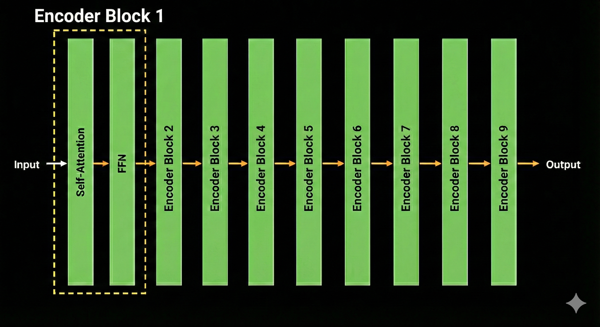
Now the problem here is we have stacked multiple encoder blocks together. This leads to vanishing gradients as the information flows through many layers, making it difficult for gradients to propagate back effectively.
To solve this issue, we introduce residual connections.
Residual connections solve this by allowing information to flow directly across blocks, which ensures that gradients can flow more effectively through the network.
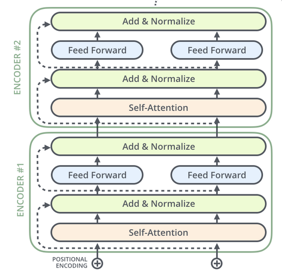
The Core Idea
Rather than computing:
\[ \mathbf{y} = F(\mathbf{x}) \]we compute:
\[ \mathbf{y} = \mathbf{x} + F(\mathbf{x}) \]Here:
- \(\mathbf{x}\): Input to the sub-layer
- \(F(\mathbf{x})\): Transformation (Attention or FFN)
- \(\mathbf{y}\): Output after residual addition
Why Residual Connections Work
During backpropagation, gradients can flow directly through the skip connection without passing through the layer's transformation:
\[ \frac{\partial \mathbf{x}_{\text{out}}}{\partial \mathbf{x}_{\text{in}}} = \frac{\partial F(\mathbf{x})}{\partial \mathbf{x}} + I \]The identity term \(I\) ensures that even if \(\frac{\partial F(\mathbf{x})}{\partial \mathbf{x}}\) is small, gradients can still propagate. This solves the vanishing gradient problem!
Intuition: Think of it as a "highway" that lets information bypass potentially problematic transformations.
If a layer doesn't need to transform the input, it can simply learn to output zeros:
\[ \text{If } F(\mathbf{x}) \approx \mathbf{0}, \text{ then } \mathbf{x}_{\text{out}} \approx \mathbf{x} \]This makes it easier for the network to learn—the layer doesn't have to reconstruct the input from scratch, it only needs to learn the changes (residuals) to make.
Example: If the embedding for "Mann" already captures most of its meaning, the layer can make small adjustments rather than recomputing everything.
Residual networks can be viewed as an ensemble of exponentially many paths. Consider a network with \(L\) layers—there are \(2^L\) possible paths through the network!
Each path corresponds to choosing whether to use the transformation \(F(\cdot)\) or skip it at each layer. For a 6-layer Transformer encoder, this creates \(2^6 = 64\) different effective paths.
Intuition: The network learns multiple complementary representations simultaneously, making it more robust.
With residual connections, each layer learns to make incremental improvements:
\[ \begin{aligned} \mathbf{x}_0 & = \text{Embedding} + \text{PositionalEncoding} \\ \mathbf{x}_1 & = \mathbf{x}_0 + \Delta_1 \quad \text{(Layer 1 adds refinement)} \\ \mathbf{x}_2 & = \mathbf{x}_1 + \Delta_2 \quad \text{(Layer 2 adds more)} \\ & \vdots \\ \mathbf{x}_L & = \mathbf{x}_0 + \sum_{i=1}^{L} \Delta_i \end{aligned} \]Each \(\Delta_i\) represents a small, focused change rather than a complete re-transformation. This makes optimization much easier.
Residual connections alone are powerful—but adding them repeatedly can cause activations to grow uncontrollably.
To fix this, Transformers apply Layer Normalization immediately after each residual block.
That’s exactly what we’ll study next.
Layer Normalization: Stabilizes the Learning Process
Up to now, we’ve built a powerful pipeline:
- Embeddings + Positional Encoding give meaning and order
- Multi-Head Attention mixes information across tokens
- FFNs apply rich non-linear transformations
- Residual connections ensure gradients flow and learning is incremental
But stacking many such blocks introduces a new problem:
- Unstable training: Large activations → exploding gradients
- Slow convergence: The optimizer struggles with inconsistent scales
- Dead neurons: Some dimensions dominate while others vanish
To fix these issues, we introduce Layer Normalization.
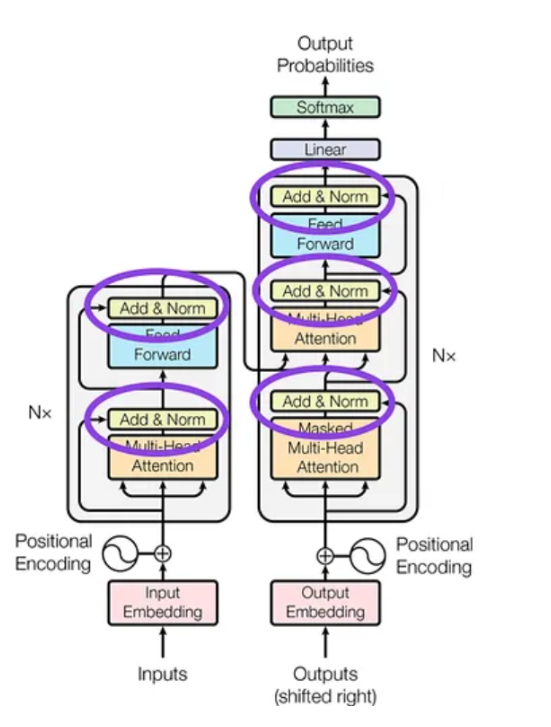
The Core Idea
Layer Normalization normalizes the features of a single token, instead of normalizing across the batch (Batch Normalization).
For a token representation
\[ \mathbf{x} = [x_1, x_2, \ldots, x_{d_{model}}] \]LayerNorm Computes:
\[ \mu = \frac{1}{d_{model}} \sum_{i=1}^{d_{model}} x_i \] \[ \sigma^2 = \frac{1}{d_{model}} \sum_{i=1}^{d_{model}} (x_i - \mu)^2 \] \[ \text{LayerNorm}(\mathbf{x}) = \gamma \odot \frac{\mathbf{x} - \mu}{\sqrt{\sigma^2 + \epsilon}} + \beta \]Where:
- \(\gamma\) and \(\beta\) are learnable parameters (scale and shift)
- \(\epsilon\) is a small constant to prevent division by zero
This guarantees that, for a token:
\[ \mathbb{E}[\mathbf{x}] \approx 0, \quad \mathrm{Var}(\mathbf{x}) \approx 1 \]Why Layer Normalization works
LayerNorm ensures that each token representation has:
\[ \mathbb{E}[\mathbf{x}] \approx 0, \quad \mathrm{Var}(\mathbf{x}) \approx 1 \]This prevents activations from exploding or shrinking as depth increases.
When gradients propagate through normalized activations:
- Learning rates can be larger
- Optimization becomes more stable
- Training converges faster
But how??
The contour plot of an unnormalized loss function might look like this:
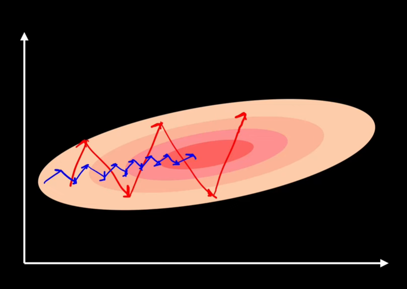
A larger Learning rate is not ideal for unnormalized data as it can lead to unstable gradients and poor convergence (higher jumps).
So, we reduce the learning rate. But this leads to slower training!!!
However, with Normalization, the loss contours become more spherical:
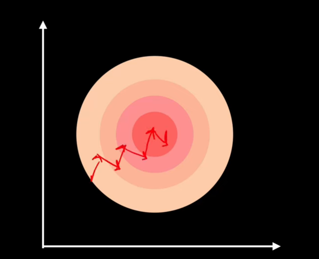
This makes the contour plot circular.
Now, we can use a larger learning rate without without worrying about instability.
Batch Normalization normalizes across the batch dimension, which mixes information across batch. Layer Normalization normalizes across the embedding dimension for each token independently, preserving the unique characteristics of each token's representation.
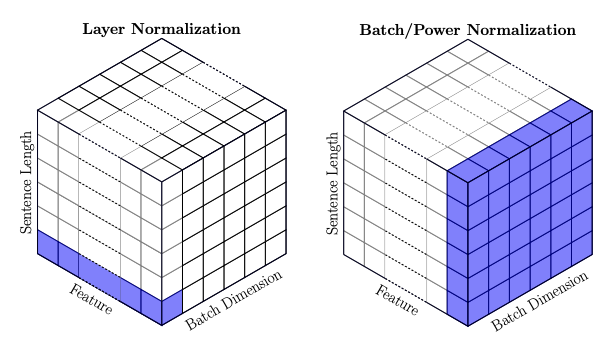
Post-Norm (Original Transformer)
\[ x_{\text{out}} = \text{LayerNorm}\bigl(x + \text{Attention}(x)\bigr) \]Pre-Norm (Improved Stability)
\[ x_{\text{out}} = x + \text{Attention}\bigl(\text{LayerNorm}(x)\bigr) \]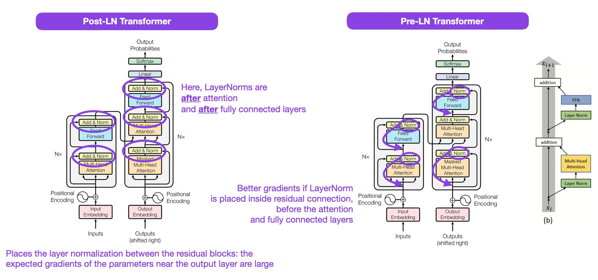
Why is Pre-Norm preferred over Post-Norm?
- Improved Gradient Flow: Normalizing before the sub-layer ensures that gradients remain stable as they pass through the layer, reducing the risk of vanishing or exploding gradients.
- Faster Convergence: Pre-Norm often leads to faster training times because the model can learn more effectively from the start.
Dropout: Controlled Noise for Robust Learning
Up to this point, our Transformer encoder is very powerful—perhaps too powerful.
With:
- High-dimensional embeddings
- Multi-head attention
- Large FFNs (2048 hidden units)
- Deep stacking
To prevent the model from memorizing training data instead of learning generalizable patterns, Transformers introduce Dropout.
The Core Idea
Dropout works by randomly zeroing out a subset of activations during training. For an input vector \( x \), dropout is defined as:
\[ \text{Dropout}(x) = m \odot x \]
where:
- \( m_i \sim \text{Bernoulli}(1 - p) \)
- \( p \) is the dropout probability (typically \( p = 0.1 \))
- \( \odot \) denotes element-wise multiplication
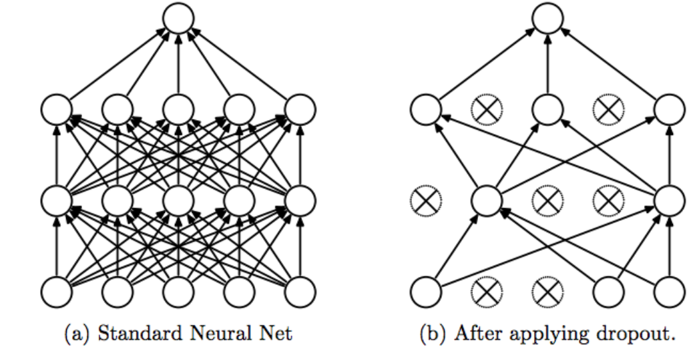
Why Dropout Works
Without dropout, neurons may rely heavily on specific other neurons. Dropout forces each neuron to contribute meaningfully on its own.
This discourages fragile feature dependencies and promotes more robust representations.
Each dropout mask corresponds to a different sub-network. Training with dropout is equivalent to averaging predictions from exponentially many such networks.
This dramatically improves generalization performance.
Where Dropout Appears in Transformers
1. After Embeddings + Positional Encoding\[ x_0 = \text{Dropout}\big(\text{Embedding}(x)\sqrt{d_{\text{model}}} + PE(x)\big) \]
This prevents the model from over-relying on:
- Specific embedding dimensions
- Exact positional signals
After computing attention scores:
\[ \alpha = \text{softmax}\!\left(\frac{QK^{\mathsf{T}}}{\sqrt{d_k}}\right) \]
We apply dropout directly to the attention matrix:
\[ \tilde{\alpha} = \text{Dropout}(\alpha) \]
This means:
- Some token-to-token connections are randomly weakened
- The model cannot always attend to the same words
This is especially important for preventing attention collapse (e.g., always attending to the same token).
3. After Multi-Head Attention Output\[ x_{\text{attn}} = \text{Dropout}(\text{MHA}(x)) \]
Then wrapped with residual connection and layer normalization:
\[ x_1 = \text{LayerNorm}(x + x_{\text{attn}}) \]
4. After the Feed Forward Network\[ x_{\text{ffn}} = \text{Dropout}(\text{FFN}(x_1)) \]
\[ x_2 = \text{LayerNorm}(x_1 + x_{\text{ffn}}) \]
This prevents the large feed-forward network (which contains most of the model’s parameters) from overfitting.
This wraps up our Encoder section — and now, we’re finally ready to decode!
The Decoder: Generating Translation
Now that we've covered most of the concepts on the encoder side, we basically know how the components of decoders work as well (except causal-masking and cross-attention mechanism).
The decoder's main job is to generate the English translation one word at a time, using both the encoder's context and the words it has already generated.
We derive most of the components from encoder here except:
- Masked Self-Attention
- Cross-Attention
Here's how a decoder looks like:
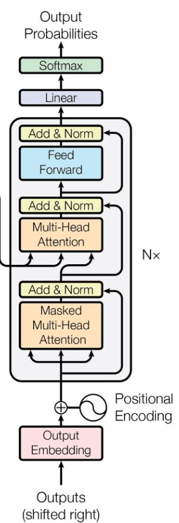
Autoregressive Generation: Creating One Token at a Time
The decoder operates autoregressively—meaning it generates the output sequence one token at a time, where each new token depends on all previously generated tokens.
Let's understand this mathematically and intuitively.
When translating "Ein Mann steht in einer Küche" → "A man is standing in a kitchen", the decoder doesn't generate all words at once. Instead:
Step 1: Generate "A"
Input: [START] Output: "A"
Step 2: Generate "man" (using "A")
Input: [START] A Output: "man"
Step 3: Generate "is" (using "A man")
Input: [START] A man Output: "is"
Step 4: Generate "standing" (using "A man is")
Input: [START] A man is Output: "standing"
...and so on until we generate [END].
For an output sequence y = (y₁, y₂, …, yT), the decoder models the conditional probability of the entire sequence as:
\[ P(\mathbf{y} \mid \mathbf{X}) = \prod_{t=1}^{T} P\!\left(y_t \mid y_{< t}, \mathbf{X}\right) \]Where:
- yt: Token generated at position t
- y<t: All previously generated tokens (y₁, y₂, …, yt−1)
- X: Encoder output representing the source sentence context
- T: Length of the output sequence
This autoregressive decomposition means:
- The probability of generating "man" is conditioned on having already generated "A"
- The probability of generating "is" is conditioned on having generated "A man"
- Each token is generated using the full history of previously generated tokens
Now let's understand how causal masking works in detail.
Masked Attention: Preventing Information Leakage
The decoder's self-attention mechanism has a critical constraint: it must be causal—meaning each position can only attend to previous positions, never future ones.
Without this constraint, the decoder would "cheat" during training by looking at the answer it's supposed to predict!
The Problem Without Masking
Imagine we're generating "A man is standing in a kitchen" and we're currently at the word "is".
Without masking:
Query: "is"
Can attend to: "A", "man", "is", "standing", "in", "a", "kitchen"
^^^^^^^^^^^^^^^^^^^^^^^^^^^^^^^^
FUTURE TOKENS!
The model could simply copy "standing" from the future, making training meaningless!
With masking:
Query: "is"
Can attend to: "A", "man", "is"
^^^ (only past + current)
Now the model must genuinely predict "standing" based only on past context.
Recall the attention formula from earlier:
\[\text{Attention}(Q, K, V) = \text{softmax}\left(\frac{QK^T}{\sqrt{d_k}}\right)V\]To make it causal, we modify the softmax step by applying a mask:
\[\text{Attention}(Q, K, V) = \text{softmax}\left(\frac{QK^T + M}{\sqrt{d_k}}\right)V\]Where M is the causal mask matrix.
The mask M is an upper-triangular matrix filled with −∞ (in practice, a very large negative number like -1e9):
\[M = \begin{bmatrix} 0 & -\infty & -\infty & -\infty \\ 0 & 0 & -\infty & -\infty \\ 0 & 0 & 0 & -\infty \\ 0 & 0 & 0 & 0 \end{bmatrix}\]For a sequence of length 4: ["A", "man", "is", "standing"]
When we compute attention scores:
\[S = \frac{QK^T}{\sqrt{d_k}} + M\]Before softmax:
Position 0 (A): [s₀₀, -∞, -∞, -∞] Position 1 (man): [s₁₀, s₁₁, -∞, -∞] Position 2 (is): [s₂₀, s₂₁, s₂₂, -∞] Position 3 (standing): [s₃₀, s₃₁, s₃₂, s₃₃]
After softmax:
\[\text{softmax}([-\infty]) = e^{-\infty} / (\text{sum}) \approx 0\]So masked positions get zero attention weight:
Position 0 (A): [1.0, 0, 0, 0] Position 1 (man): [0.3, 0.7, 0, 0] Position 2 (is): [0.2, 0.5, 0.3, 0] Position 3 (standing): [0.1, 0.3, 0.4, 0.2]
Each position can only attend to itself and earlier positions!
Comparing Encoder vs. Decoder Attention
Encoder Self-Attention (Bidirectional):
- Can attend to all positions (past, current, future)
- Used for understanding/encoding the input
- No mask needed
Decoder Self-Attention (Causal):
- Can attend only to past positions (and current)
- Used for generation
- Causal mask required